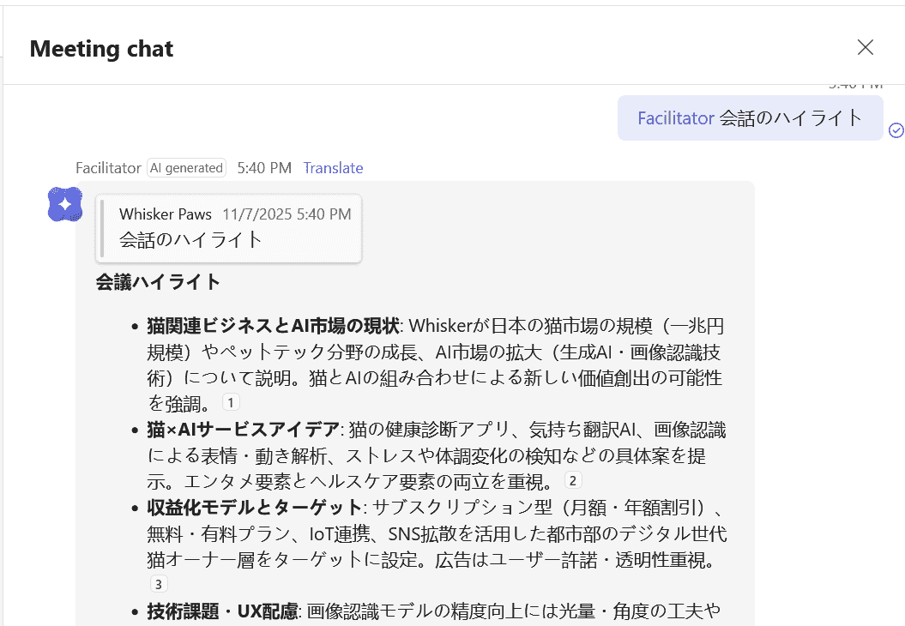
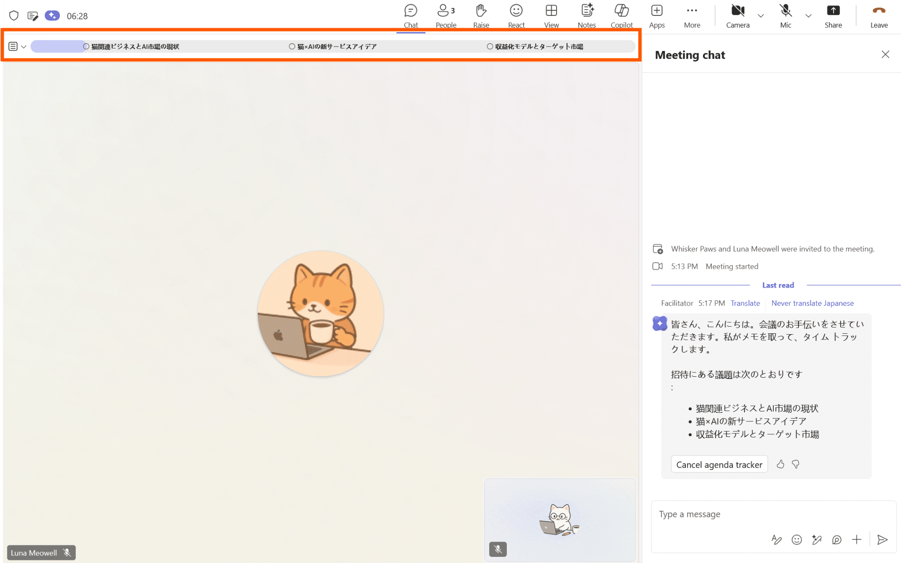
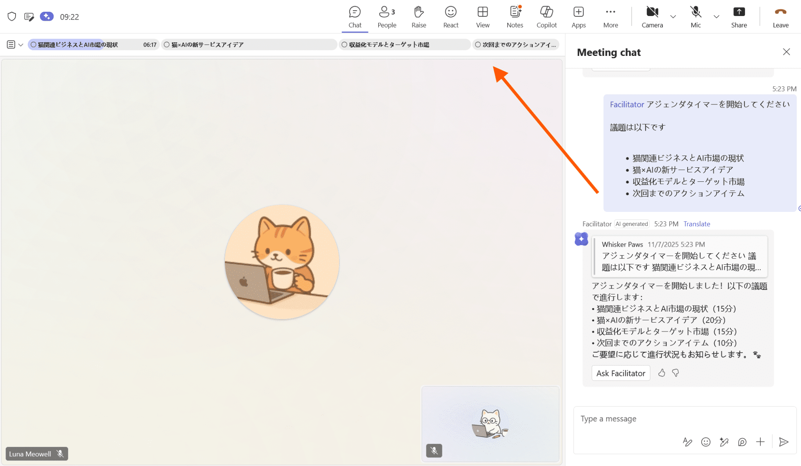
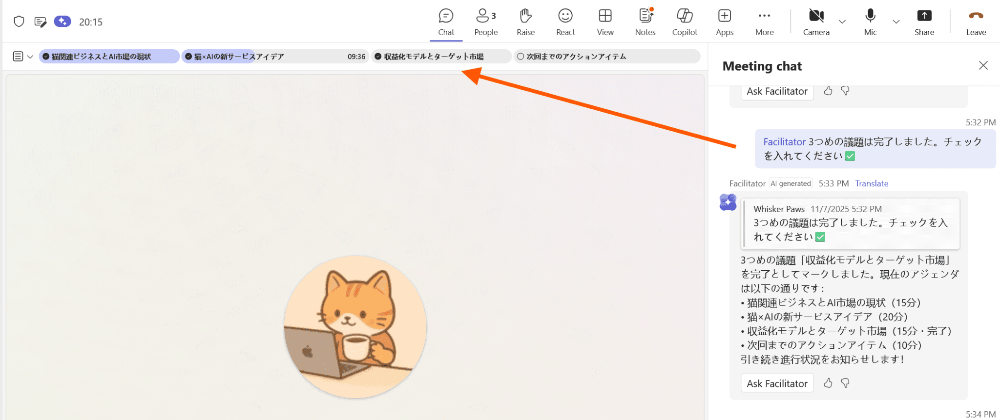
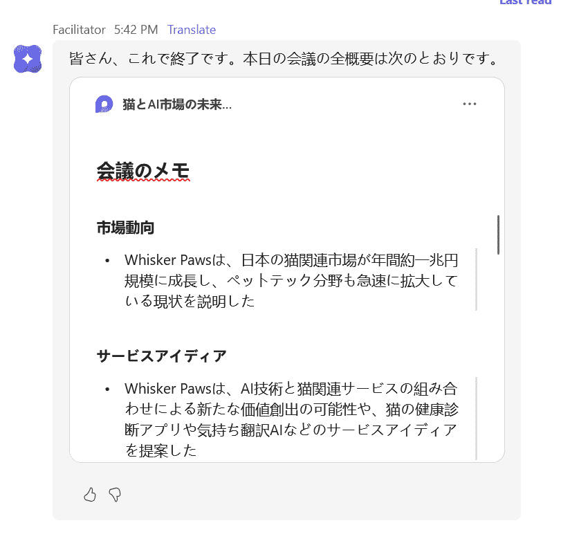

はじめに
こんにちは、 Unified Communications サポート チームです。
いつも Microsoft Teams をご利用いただきありがとうございます。
本記事では Teams 会議の「ファシリテーター」エージェントについてご紹介いたします。ファシリテーターは、Teams 会議でのコラボレーションを強化する AI エージェントです。
そんなファシリテーターについて、本記事では “こんなところがスゴイ✨” にスポットライトを当ててご紹介いたします！
※ 本記事の内容は執筆時点 (2025 年 11 月現在) の情報・動作に基づくものとなります。最新の動作については公開情報の更新をご確認ください。
📖 関連公開情報
Teams 会議の「ファシリテーター」とは
ファシリテーター ( Facilitator ) は、Teams 会議の中で動作する AI エージェントです。

機能の概要や前提条件についてはこちらの公開情報をご参照ください。また、ファシリテーターを会議に追加する方法についてはこちらの公開情報に記載がございます。
ファシリテーターのここがすごい
そんなファシリテーターエージェントについて、「ここがすごい✨」な機能・特徴を 4 つご紹介します。
- 会議チャットに AI が同席。聞き逃した部分もすぐに質問できます💭
- アジェンダタイマーで時間配分もスムーズに⏰
- 自動で議事録を作成。タスク管理もします⚡
- Word や Loop ドキュメントとしてのまとめも作れる📝
1. 会議チャットに AI が同席 聞き逃した部分もすぐに質問できます💭
ファシリテーターが会議に追加され、 @facilitator とファシリテーターにメンションすることで、会議内容に基づく質問や Web 検索ベースの質問 ( プロンプト ) を送ることができます。
例えば、以下のようなプロンプトを送り、AI からの回答を得ることが可能です。
- @facilitator 会話のハイライト
- @facilitator どのような決定が下されましたか?
- @facilitator Web で次を検索してださい: AI とはなんですか？
// ファシリテーターへのプロンプト・回答例

2. アジェンダタイマーで時間配分もスムーズに⏰
ファシリテーターを使うことで、会議にアジェンダタイマーを追加することができます。
会議招待時、会議説明に議題内容を記載している場合、ファシリテーターは自動でアジェンダタイマーを開始します。

アジェンダタイマーを手動で開始したい場合は、以下のようなプロンプトを使います。
1 | @facilitator アジェンダタイマーを作成してください。 |
アジェンダタイマーが作成されると会議画面にタイムライン マーカーが表示されます。
この時間配分は会議時間に応じて自動で配分されますが、プロンプトで調整することも可能です。
例えば、下図では 60 分の時間で招待した Teams 会議に対して 4 つのアジェンダの時間配分を行った状態になります。

Teams 会議の中で各アジェンダの内容が話されたとファシリテーターが判断すると、トラッカーに ✅ が入ります。
📎 「 @facilitator xxx の議題のトラッカーにチェックを入れて 」といったプロンプトを用いることで、手動で完了とすることも可能です。

3. 自動で議事録を作成 タスク管理もします⚡
ファシリテーターは、会議の「メモ」として会議の議事録を作成します。会議中の [メモ] タブや会議後に送られるチャット内の Loop コンポーネント ( 下図 ) から作成された内容を確認することが可能です。

また、ファシリテーターは会議で話されたタスク事項やプロンプトで指示された内容から自動的にタスク作成を行うことも可能です。作成されたタスクは Plannner に同期されます。
例えば下図の場合、 ✨ アイコンのあるタスクがファシリテーターが自動的に作成したタスクになります。

※ Plannner と連携するタスク作成機能は、 2025 年 11 月現在パブリック プレビューの機能となります。
4. Word や Loop ドキュメントとしてのまとめも作れる📝
ファシリテーターを用いて会議内容をまとめたドキュメント ( Loop ページ 、Word ファイル ) を作成することができます。
例えば、Word ファイルを作成するには以下のようなプロンプトで指示をします。
1 | @facilitator この会話のハイライトを盛り込んだ Word ドキュメントを作成してください。 |
作成されたドキュメントは、会議チャット内でファシリテーターから送信されます。

※ 本機能は 2025 年 11 月現在パブリック プレビューの機能となります。
おわりに
本記事では、Teams 会議のファシリテーター機能についてご紹介させていただきました。ファシリテーターエージェントは、アジェンダタイマーによる進行状況の可視化や、AI による議事録作成支援など、会議運営をサポートする様々な機能を備えています🤖
会議中の時間管理や議事録作成といった作業を AI がサポートすることで、会議参加者はより会議の議論により注力しやすくなります。また、会議後の決定事項やタスクの整理もスムーズに行うことが可能となります。
本記事がファシリテーター機能活用にあたり、本記事が少しでもご参考となりましたら、幸いです。
(文責 : 山上)
NOTE: - 2025 年 11 月 20 日に、初版を公開しました。
※本情報の内容（添付文書、リンク先などを含む）は、作成日時点でのものであり、予告なく変更される場合があります。